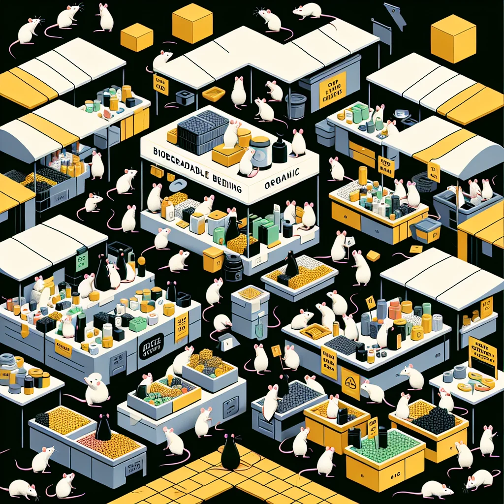

{kind=link}
{kind=link}
In Ratopolis, a wave of eco-consciousness is sweeping the bustling metropolis as discerning rats are increasingly turning to sustainable and eco-friendly products. From biodegradable bedding to natural grooming solutions, the trend signifies a substantial shift towards greener living.
The past few years have seen a remarkable surge in the market for eco-friendly rat products, driven by a blend of environmental concern and health consciousness. "Our natural grooming products have been flying off the shelves," says Squeakwell, owner of Squeakwell's Squeaky Suds. "Rats are really starting to understand that what’s good for the planet is also good for them. It’s a win-win!"
So, what precisely is fueling this green revolution in Ratopolis? The stats speak volumes. The eco-friendly product market has grown by nearly 40% in the past year alone. Popular offerings include biodegradable bedding, natural grooming items, and organic food, all designed to meet the high standards of today’s eco-savvy rats.
"Switching to biodegradable bedding was a game-changer for my pups," remarks Whiskle Jenkins, an eco-conscious rat parent. "Not only is it better for the environment, but it's also much safer for them to snuggle in." The health benefits associated with these products are a key driver behind their burgeoning popularity.
Interestingly, businesses in Ratopolis are playing a critical role in this eco-friendly wave. Many have pivoted towards sustainable practices in response to growing consumer demand. "Sustainable materials come with higher costs, but it’s worth it. Our buyers appreciate the quality and environmental impact," shares Pip McNibble, founder of GreenWhiskers Earth Emporium.
There's no denying the positive environmental implications. Waste reduction, lower pollution levels, and a healthier ecosystem are just a few of the benefits these products bring to Ratopolis. "We need to keep pushing for more sustainable options. It’s pawsitively inspiring to see so many rats getting on board with the green movement," says Nutella Greenthumb, an environmental activist.
Yet, the journey isn’t without challenges. Manufacturers frequently grapple with higher production costs and sourcing sustainable materials. Ensuring these products remain affordable while maintaining quality is a delicate balance. However, ongoing innovations and economies of scale offer hope for a more accessible future.
Looking ahead, the trend towards eco-friendly products is poised to grow even stronger. Predictions indicate a steady expansion in this market, with more businesses adopting sustainable practices and an increasing number of products catering to eco-conscious consumers.
On the flip side, some argue that the high costs associated with eco-friendly products limit their accessibility. Critics suggest that significant investments are needed to bring down prices and make these products more affordable for the average rat. Additionally, the higher costs could deter smaller businesses from transitioning to sustainable practices.
However, the advantages far outweigh these challenges. Eco-friendly products contribute to a safer, healthier environment, benefiting not just individual rats but the community at large. Efforts to promote sustainable living are already evident in various community initiatives, like recycling programs and educational campaigns.
A brief foray into the historical roots of this green movement uncovers a rich tapestry of early adopters and pioneers. Many of these trailblazers have paved the way for today’s market leaders, showcasing resilience and commitment toward a greener future.
Rat-block by rat-block, Ratopolis is transforming into a beacon of sustainability. Successful businesses, like GreenWhiskers and Squeaky Suds, exemplify how eco-friendly products are not only viable but also profitable. Their journey highlights the importance of innovation and consumer education in fostering a more sustainable rat society.
Moreover, community initiatives are integral to this transformation. Programs aimed at educating young rats about sustainability are gaining traction, nurturing a new generation of eco-warriors. Recycling schemes and green expos further bolster these efforts, encouraging rats to adopt more environmentally friendly habits.
In conclusion, the rise of eco-friendly products in Ratopolis epitomizes a collective stride towards a healthier and more sustainable future. It’s heartening to witness a community rallying for a cause that benefits all its members. As we scurry forward, let’s continue to make greener choices and support businesses that prioritize the environment.
Isn't it time we all jumped on the eco-friendly bandwagon and made Ratopolis the greenest metropolis in the Rat Universe? After all, in echoing the sentiments of activist Nutella Greenthumb, “Every little bit helps.” Let’s make every nibble, every snuggle, and every squeak count toward a more sustainable future. Together, we can create a whisker-lickin' good world for all.
Looking for more in-depth news and exclusive content? Follow RAT TV for real-time updates, behind-the-scenes insights and the latest breaking news.
Squeaky Clean: The Rise of Eco-Friendly Rat Products
In Ratopolis, a wave of eco-consciousness is sweeping the bustling metropolis as discerning rats are increasingly turning to sustainable and eco-friendly products. This trend signifies a substantial shift towards greener living, driven by environmental concern and health consciousness.
4 minute read •
Comments

Comments